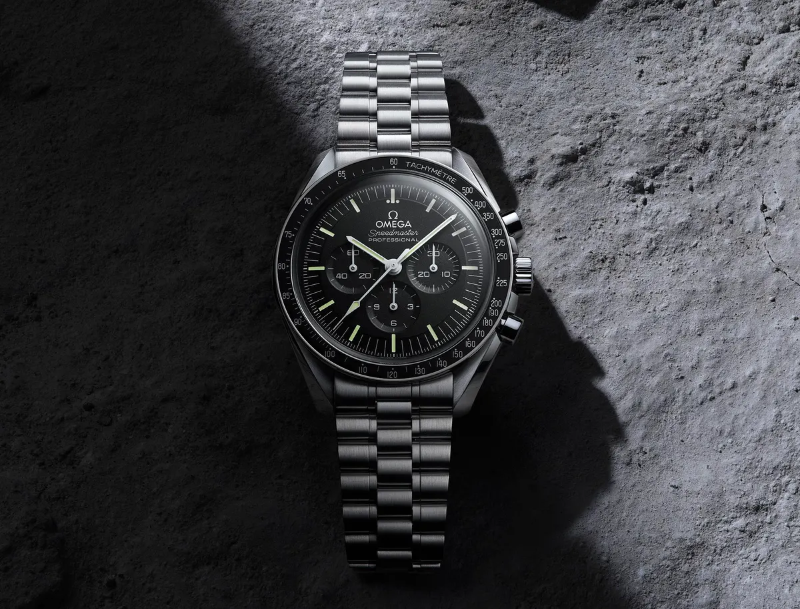

Speedmaster
In 1966 werd Speedmaster-referentie 105.012 bijgewerkt naar referentie 145.012. Deze twee modellen zouden de twee Speedmaster-referenties zijn waarvan bekend is dat ze op de maan werden gedragen door Apollo-astronauten, de originele 'Moon-horloges'. Speedmasters werden gebruikt tijdens het vroege Apollo-programma met bemanning en bereikten de maan met Apollo 11. Ironisch genoeg Deze en eerdere modellen staan informeel bekend als "pre-Moon" Speedmasters, aangezien hun productie dateert van vóór de maanlandingen en de inscriptie mist die daaropvolgende modellen dragen: "The First Watch Worn on the Moon".

- Specificaties
- Prijs: $3.917
- Opwinden: Handopwind
- Bouwjaar: 1997
- Referentienummer: 3570.50.00
- Hoogte: 13.8mm
- Waterdicht:5 ATM
- Glas: Kuntstof
- Diameter: 42mm